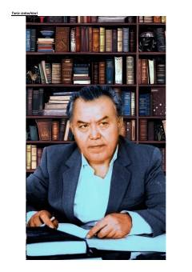

OYO'zbek xalq yozuvchisi Odil Yoqubovning hayoti va ijodi haqida qisqacha ma'lumotnoma.
Bu material o'zbek xalq yozuvchisi Odil Yoqubov (1926–2009) hayoti va ijodiy faoliyati haqida ma'lumot beradi. Unda yozuvchining asarlari, mukofotlari, jamoat arbobi sifatidagi faoliyati va tarjimonlik ishlari qisqacha yoritilgan. Matn 'Tarix izdoshlari' turkumiga mansub bo'lib, ensiklopedik tarzda tuzilgan.